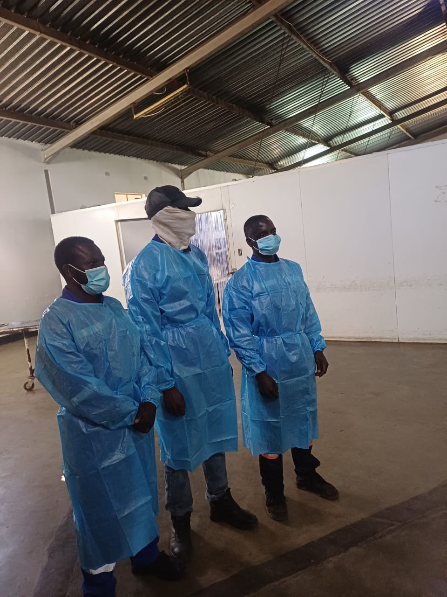

Inverter vs Non-Inverter Air Conditioners: Which Should You Buy?
Walk into any appliance shop in Lusaka and you will see two kinds of split air conditioner side by side: "inverter" models and cheaper "non-inverter" or "fixed-speed" models. They look almost identical, but they work very differently — and the choice you make will show up on every ZESCO bill for the next ten years.

In this guide
The Key Difference
The heart of every air conditioner is its compressor. In a non-inverter unit, the compressor has one speed: full power or off. It runs flat-out until the room reaches the set temperature, switches off, waits for the room to warm up, then kicks back on at full power. That constant stop-start cycle wastes energy and causes noticeable temperature swings.
An inverter air conditioner uses a variable-speed compressor. It runs hard at first to cool the room quickly, then slows down and ticks over at low speed to hold the temperature steady. Think of it like driving: a non-inverter is constantly flooring the accelerator and slamming the brakes, while an inverter settles into a steady cruise.
Energy Savings
Because it avoids repeated full-power starts and matches its output to the actual heat in the room, an inverter AC typically uses 30–50% less electricity than a non-inverter unit of the same size, especially when it runs for long hours. In an office or bedroom where the AC runs eight or more hours a day through a Zambian October, that difference is substantial. Look for a high SEER (seasonal energy efficiency ratio) rating when comparing models — the higher, the better.
Upfront Cost vs Running Cost
Inverter units usually cost more to buy — often 20–40% more than an equivalent non-inverter. Installation costs are much the same (see what AC installation costs in Zambia). The question is how quickly the energy savings repay that premium:
- Daily, long-hour use (offices, shops, bedrooms used every night): the inverter pays back its extra cost within a couple of years, then keeps saving.
- Occasional use (a guest room used a few times a month): the savings are small and a non-inverter may be more economical.
Quick tip: Whatever type you choose, sizing is critical. An oversized non-inverter unit short-cycles even more, and an undersized inverter runs at full speed all day, wiping out its savings. Check our guide on what size AC you need.
Comfort, Noise and Lifespan
Inverter air conditioners hold the room within about half a degree of the set temperature, instead of letting it swing warm and cold. They are also noticeably quieter, because the compressor spends most of its time running slowly rather than roaring on and off — a real plus in bedrooms and meeting rooms.
Fewer hard starts also mean less wear on the compressor and electrical components. Well-maintained inverter units often outlast fixed-speed models. The trade-off is that their electronic control boards are more complex and can be sensitive to power surges — so surge protection is highly recommended in areas with frequent load-shedding.
Running on Solar, Inverters and Generators
This is where inverter ACs really shine in Zambia. A non-inverter compressor draws a large surge of current every time it starts — often five to seven times its running current — which can trip a home inverter system or overload a small generator. An inverter AC soft-starts, ramping up gradually, and its lower running power makes it far easier to support on a solar or battery backup system. If you ever want cooling during load-shedding, choose an inverter model.
When a Non-Inverter Still Makes Sense
Non-inverter units are not obsolete. They can make sense when the budget is tight and usage is low, for spaces used only briefly, or in very dusty, harsh sites where simpler electronics are easier to repair locally. Parts for basic fixed-speed units are also widely available. What matters most for either type is quality installation and regular maintenance.
Our Verdict
For most Zambian homes and businesses that use air conditioning daily, an inverter air conditioner is the better investment: lower bills, steadier comfort, quieter running and far better compatibility with backup power. Pair it with correct sizing, surge protection and professional installation, and it will serve you well for years. Our air conditioning team can recommend the right unit for your space and budget.
Frequently Asked Questions
How much electricity does an inverter AC save?
Typically 30 to 50 percent compared with a non-inverter unit of the same capacity, with the biggest savings in rooms where the AC runs for many hours each day.
Are inverter air conditioners more expensive to repair?
Their control boards are more complex, so some repairs cost more. However, they tend to break down less often because the compressor avoids constant hard starts. Surge protection greatly reduces board failures.
Can I run an inverter AC on a generator?
Yes. Inverter ACs soft-start, so they place far less strain on generators and solar inverters than fixed-speed units, which draw a large surge every time the compressor starts.
How can I tell if an AC is an inverter model?
The word "inverter" or "DC inverter" is almost always printed on the indoor unit, the box and the energy label. Check the model specification sheet if unsure.
Choosing a New Air Conditioner?
Get expert advice and a free quote for supply and installation of inverter AC units across Zambia.
WhatsApp Us